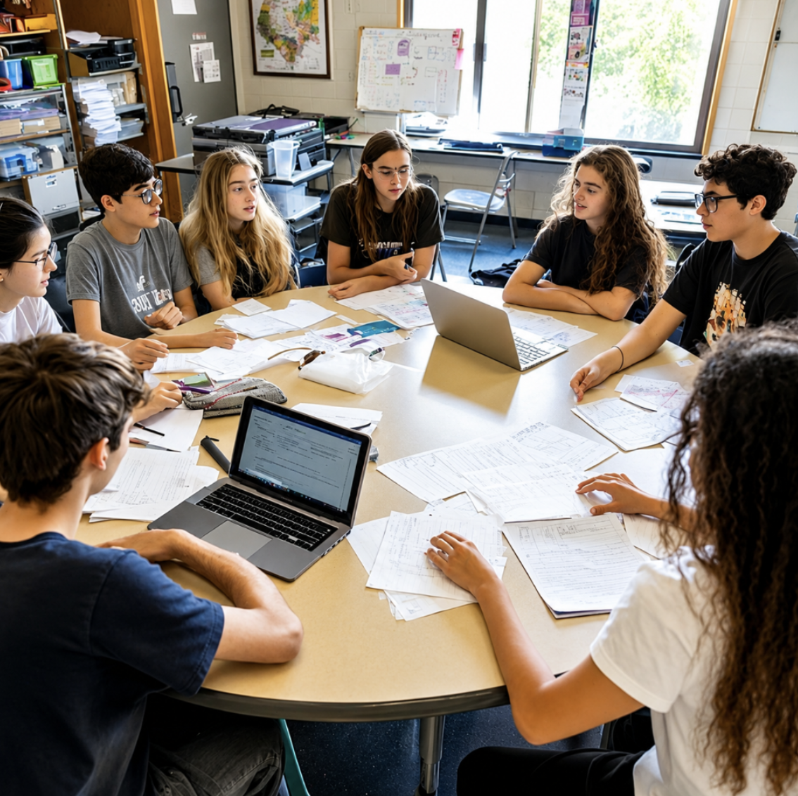

Study Impact Page:
Language Fatigue and Learning
How Language Barriers Affect Concentration
How Language Barriers Affect LearningTrying to learn in a completely different language every single day causes big problems for your grades and your concentration. When international students sit in class at Green Bay High School, they aren't just listening to the teacher. They are constantly translating every single word back and forth inside their heads. This causes huge brain strain and makes you feel completely tired before the school day is even halfway done. Because your brain is working twice as hard just to follow along, it is super easy to miss the main parts of what the teacher is saying. You can get totally lost when people talk fast or struggle to read long, heavy textbook pages. Lots of new students feel too stressed or embarrassed to raise their hand or ask questions when they get stuck. This makes it really hard to pass assessments and makes people feel left out and lonely at school.
Brain Overload and Wellbeing
How Translation Stress Can Affect Learning and Confidence
When you are trying to learn stuff in a completely different language every day, it takes a massive amount of extra time just to understand weird words and figure out what is going on. Your brain has to work twice as hard just to keep up with a normal lesson. Because international students are using up all their mental energy just trying to translate English phrases on the fly, it becomes way harder to focus on the actually difficult parts of the class, like tricky maths formulas or heavy science ideas. This really knocks your confidence back and makes a simple school day feel totally exhausting. These major language barriers also change how you feel when you are hanging out at school. A lot of students get super tired after forcing themselves to focus on a foreign language for hours without a break. It also makes you feel really nervous or embarrassed about making silly mistakes or pronouncing words completely wrong in front of everyone, which means you lose all confidence to speak up in class. Over time, heaps of international students just stop taking part in classroom discussions altogether and end up feeling totally isolated and cut off from other students.

How Language Swaps Mess Up Your Classes and Exams
The Panic with Group Work and Daily Class Stuff
Language barriers make it a massive struggle to get good marks and finish your daily classwork at Green Bay High School. In subjects like English, History, or Social Studies, international students have to slog through giant walls of text and crazy long essays. Trying to figure out weird metaphors, old historical stories, or hard vocabulary words takes up so much time that you often run out of time in the exam. That means your grades drop big time, even when you totally get the topic. You see the exact same issue in practical classes like Science or Maths too. Language barriers just make it way too hard to figure out what maths word problems are asking, read science lab steps properly, or remember specific words like chemical equations and geometry rules. This communication struggle also completely ruins normal class activities, especially when you have to do interactive group work. When teachers tell everyone to get into groups for a project, international students usually just stay completely quiet because they are stressed about missing what their classmates are saying or pronouncing something wrong. This ends up with the local students accidentally taking over the whole project, which makes the international kids feel totally useless or left out. On top of that, if you miss a fast instruction from the teacher, you might completely mess up your homework deadlines or project criteria, causing massive panic when due dates pop up.